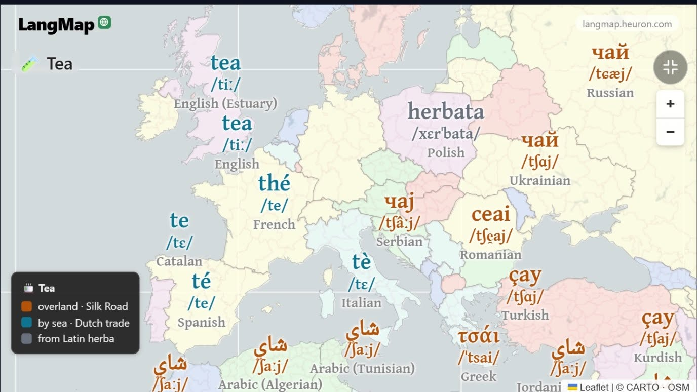

Sinosphere · · revised · Facebook post
Everyone Knows Tea Splits into Cha and Te. There Is a Third Answer.
- Almost every language's word for tea came out of China by one of two roads, cha overland or te by sea.
- Both go back to the same character, 茶, read one way in the north and another on the Fujian coast.
- Polish herbata and Lithuanian arbata are the third answer, and Burmese is a fourth.

Contents
Two roads out of China
Everyone knows this one.
Almost every language's word for tea goes back to one of two roads out of China.
Over land, along the Silk Road:
Russian: чай (chay)
Turkish: çay
Arabic: شاي (shāy)
Hindi: चाय (chāy)
By sea, with the Dutch:
Dutch: thee
French: thé
German: Tee
Spanish: té
English: tea
Mapped, it cuts Eurasia cleanly in two.
One character, two readings
Both roads start at the same character:
茶
In Mandarin it is chá. Cantonese says caa4.
But on the coast of Fujian, the Min varieties kept an older consonant. Hokkien says tê.
It was the northern chá that travelled overland to Central Asia and Persia, where it may have picked up the Persian ending that gives chai.
And it was the Min tê that the Dutch picked up in the 17th century, either straight from Hokkien traders or by way of Malay teh. The Dutch dominated the early European tea trade, so most of Europe learned the word from them.
The Sinosphere itself is on the land side:
Japanese: お茶 (ocha)
Korean: 차 (cha)
Vietnamese: trà
Portugal is the famous exception. The Portuguese came by sea, but they traded through Macau, where Cantonese also says cha. So Portuguese has chá: a sea word with a land shape.
The third answer
Look at the map again.
In the middle of Europe there is a grey patch.
Polish: herbata
Lithuanian: arbata
Neither cha nor plain te.
Herbata starts with herba, Latin for "herb". The usual account traces it to a Dutch trading name, herba thee, "tea herb", in which the Latin herb was joined to the Dutch sea word. A minority prefers Latin herba thea. Lithuanian arbata was borrowed from Polish.
So the map gives these two a colour of their own: from Latin herba.
Look closely, and the -ta at the end is still the sea word. The new part is the herb in front.
And a Polish kitchen has one word from each road. The drink is herbata. The kettle is a czajnik, from Russian.
And a fourth
Burmese does not fit either.
လက်ဖက်ရည် (ləpʰɛʔ jè)
It is lahpet, the tea plant, plus a word for liquid.
The map once filed Burmese with Polish under the Latin family, until a reader pointed out the mistake. Lahpet may go back to Proto-Sino-Tibetan *s-la, "leaf", the same old word that may lie behind 茶 itself.
Burma did not need a trader to bring the word. It kept the leaf's own name.
The rule and its exceptions
So the tea map is not two answers but four:
cha: over land, from northern China
te: by sea, from the Fujian coast
herbata: a Latin herb in front of the sea word
lahpet: the leaf itself
When a rule divides the world this neatly, it is tempting to assume it covers everything.
Real maps usually have a third answer tucked into them somewhere. For the most-drunk beverage on earth after water, that seems about right.
Two roads carried the word for tea around the world, but the map still keeps a few that took neither.